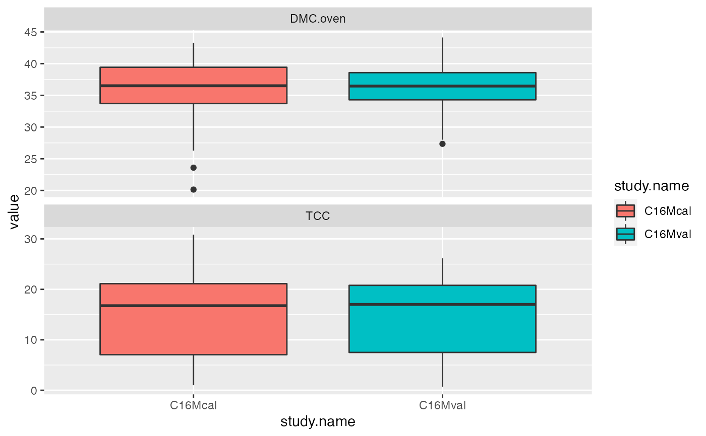

The `ikeogu.2017` data set contains raw vis-NIRS scans, total carotenoid content, and cassava root dry matter content (using the oven method) from the 2017 PLOS One paper by Ikeogu et al. This dataset contains a subset of the original scans and reference values from the supplementary files of the paper. `ikeogu.2017` is a `data.frame` that contains the following columns:
study.name = Name of the study as described in Ikeogu et al. (2017).
sample.id = Unique identifier for each individual root sample
DMC.oven = Cassava root dry matter content, the percentage of dry weight relative to fresh weight of a sample after oven drying.
TCC = Total carotenoid content (\(\mu g/g\), unknown whether on a fresh or dry weight basis) as measured by high performance liquid chromatography
X350:X2500 = spectral reflectance measured with the QualitySpec Trek: S-10016 vis-NIR spectrometer. Each cell represents the mean of 150 scans on a single root at a single wavelength.
ikeogu.2017
An object of class tbl_df (inherits from tbl, data.frame) with 175 rows and 2155 columns.
Ikeogu, U.N., F. Davrieux, D. Dufour, H. Ceballos, C.N. Egesi, et al. 2017. Rapid analyses of dry matter content and carotenoids in fresh cassava roots using a portable visible and near infrared spectrometer (Vis/NIRS). PLOS One 12(12): 1–17. doi: 10.1371/journal.pone.0188918.
Original authors: Ikeogu, U.N., F. Davrieux, D. Dufour, H. Ceballos, C.N. Egesi, and J. Jannink. Reformatted by Jenna Hershberger.
#> # A tibble: 10 x 10 #> study.name sample.id DMC.oven TCC X350 X351 X352 X353 X354 X355 #> <chr> <chr> <dbl> <dbl> <dbl> <dbl> <dbl> <dbl> <dbl> <dbl> #> 1 C16Mcal C16Mcal_1 39.6 1.00 0.488 0.495 0.506 0.494 0.500 0.496 #> 2 C16Mcal C16Mcal_2 35.5 17.0 0.573 0.568 0.599 0.593 0.581 0.597 #> 3 C16Mcal C16Mcal_3 42.0 21.6 0.599 0.627 0.624 0.606 0.607 0.624 #> 4 C16Mcal C16Mcal_4 39.0 2.43 0.517 0.516 0.514 0.536 0.542 0.536 #> 5 C16Mcal C16Mcal_5 33.4 24.0 0.519 0.548 0.554 0.549 0.549 0.567 #> 6 C16Mcal C16Mcal_6 32.1 19.0 0.576 0.566 0.589 0.591 0.613 0.628 #> 7 C16Mcal C16Mcal_7 35.8 6.61 0.530 0.536 0.525 0.539 0.537 0.529 #> 8 C16Mcal C16Mcal_8 26.3 14.1 0.596 0.596 0.602 0.608 0.604 0.610 #> 9 C16Mcal C16Mcal_9 38.1 28.9 0.675 0.662 0.688 0.694 0.697 0.695 #> 10 C16Mcal C16Mcal_10 31.8 18.4 0.510 0.527 0.535 0.538 0.542 0.551ikeogu.2017 %>% dplyr::select(-starts_with("X")) %>% dplyr::group_by(study.name) %>% tidyr::gather(trait, value, c(DMC.oven:TCC), na.rm = TRUE) %>% ggplot2::ggplot(aes(x = study.name, y = value, fill = study.name)) + facet_wrap(~ trait, scales = 'free_y', nrow = 2) + geom_boxplot()